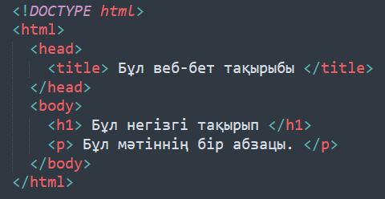
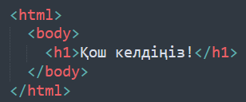
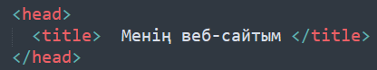
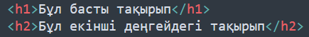
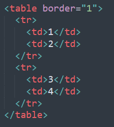

Веб-технология — бұл интернет желісі арқылы ақпараттарды беру, сақтау және өңдеу үшін қолданылатын бағдарламалық және техникалық құралдар мен әдістердің жиынтығы. Веб-технологиялар интернетке немесе жергілікті желілерге қосылған құрылғылар арасында байланыс орнатуға мүмкіндік береді, сонымен қатар веб-сайттарды құру, басқару және пайдалану үшін қажет барлық құралдарды қамтиды.
Веб-технологияның негізгі элементтері: 1. Интернет және WWW 2. Веб-сайттар мен веб-беттер 3. HTML (HyperText Markup Language) 4. CSS (Cascading Style Sheets) 5. Веб-серверлер мен клиент-сервер архитектурасы 6. URL (Uniform Resource Locator) 7. IP-адрес
Интернет — бұл дүниежүзілік ақпараттық желі, онда әртүрлі құрылғылар мен компьютерлер бір-бірімен байланысып, ақпарат алмасуға мүмкіндік береді. Интернетте сайттар, қолданбалар, әлеуметтік желілер және басқа да қызметтер бар. Бұл қазіргі таңда бүкіл әлемді байланыстыратын ең үлкен желі болып табылады. Интернеттің негізгі функциялары - ақпарат алмасу, веб-сайттарға қол жеткізу, электронды пошта арқылы хат жазу және алу, онлайн ойындар мен қызметтер. Мысал: Интернет арқылы Google немесе YouTube сияқты сайттарға кіріп, ақпарат іздеуге болады.
WWW (World Wide Web) WWW (World Wide Web) — бұл Интернеттің бөлігі, ол гипермәтіндер мен мультимедиялық ақпараттарды байланыстыратын жүйе. WWW арқылы сіз браузердің көмегімен веб-сайттарға кіріп, ақпаратты көре аласыз. WWW және интернеттің айырмашылығы: WWW — интернеттің үстінде жұмыс істейтін ақпараттық жүйе, ол веб-беттер мен сайттардан тұрады. Мысал: Интернет — бұл жол, ал WWW — сол жолмен өтетін көлік. Сіз интернет арқылы гиперсілтемелермен байланысқан веб-сайттарға кіресіз.
Веб-сайт (Website) Веб-сайт — бұл интернетте орналасқан және белгілі бір ақпаратты немесе қызметті ұсынатын беттердің жиынтығы. Веб-сайттар әдетте HTML, CSS, JavaScript тілдерінде жасалады және оларды браузер арқылы көруге болады. Веб-сайттардың түрлері: 1. Жеке веб-сайттар — жеке адамдардың ақпараттық немесе хобби мақсатындағы сайттары. 2. Коммерциялық веб-сайттар — бизнес пен қызмет көрсету үшін жасалған сайттар. 3. Мемлекеттік немесе білім беру сайттары — оқу орындары немесе мемлекеттік мекемелер үшін сайттар. Мысал: Google, Facebook, Instagram сияқты танымал веб-сайттар.
Браузерлер (Browsers) Браузер — бұл веб-сайттарды көру үшін қолданылатын бағдарламалық құрал. Браузерлер веб-беттерді ашу, оларды көрсету және қолданушылардың веб-сайттармен өзара әрекеттесуіне мүмкіндік береді. Ең танымал браузерлер: Google Chrome, Mozilla Firefox, Microsoft Edge, Safari, Opera. Мысалы, Google Chrome браузері арқылы интернетте серфинг жасап, әртүрлі сайттарға кіре аласыз.
Веб-серверлер мен клиент-сервер архитектурасы Веб-сервер — бұл интернеттегі веб-сайттардың барлық мәліметтерін сақтайтын және клиенттің сұранысына жауап беретін сервер. Веб-серверлер HTTP (Hypertext Transfer Protocol) арқылы ақпаратты жібереді. Клиент-сервер архитектурасы: Клиент — бұл интернет арқылы серверге сұраныс жіберетін құрылғы (мысалы, веб-браузер). Сервер — бұл сұраныстарды қабылдап, қажетті мәліметтерді жіберетін жүйе.
URL (Uniform Resource Locator) URL — бұл веб-сайттың нақты мекен-жайын білдіретін стандартталған адрес. URL арқылы веб-бетке тікелей қатынасуға болады. URL құрылымы: Протокол: http:// немесе https:// Домен аты: www.google.com Жол (path): /search?q=web Мысал: https://www.example.com — бұл веб-сайттың толық URL мекенжайы.
IP-адрес (Internet Protocol Address) IP-адрес — бұл интернет желісінде әрбір құрылғыға берілетін ерекше сандық мекен-жай. Ол құрылғының интернетке қосылуын қамтамасыз етеді. IP-адрес түрлері: IPv4: 32 биттік сандық жүйе (мысалы, 192.168.1.1). IPv6: 128 биттік жүйе (мысалы, 2001:0db8:85a3:0000:0000:8a2e:0370:7334). Мысал: Егер сізге веб-сайтқа кіру үшін доменнің атауы емес, IP-адресі қажет болса, мысалы, 172.217.13.110 — бұл Google сайтының IP-адресі.
Веб-технологиялардың маңызды аспектілері: 1. Интерактивтілік: веб-сайттар мен қолданбалар қолданушылармен өзара әрекеттесуге мүмкіндік береді. Мысалы, JavaScript көмегімен веб-беттер динамикалық болып, қолданушының іс-әрекетіне жауап береді (кнопкаларды басу, форма толтыру және т.б.). 2. Қауіпсіздік: Веб-технологиялар қазіргі әлемде ақпарат алмасудың негізгі құралы болып табылады. Бұл технологиялар интернет арқылы байланыс орнатуды, мәліметтерді іздеуді, сайттарға кіруді және олармен жұмыс істеуді жеңілдетеді. Технологиялардың негіздерін түсіну интернетті тиімді пайдалану үшін өте маңызды. 3. Мобильді үйлесімділік: қазіргі уақытта веб-сайттар тек компьютерлерде ғана емес, мобильді құрылғыларда да дұрыс жұмыс істеуі қажет. Бұл үшін responsive design (қолданушы құрылғысына байланысты бейімделген дизайн) принципі қолданылады. 4. Веб-қосымшалар: интернет арқылы жұмыс істейтін бағдарламалар. Мысалға, Google Docs, Trello сияқты қосымшалар, олар серверде орналасып, қолданушылардың браузерлерінде жұмыс істейді.
Веб-технологиялар қазіргі әлемде ақпарат алмасудың негізгі құралы болып табылады. Бұл технологиялар интернет арқылы байланыс орнатуды, мәліметтерді іздеуді, сайттарға кіруді және олармен жұмыс істеуді жеңілдетеді. Технологиялардың негіздерін түсіну интернетті тиімді пайдалану үшін өте маңызды.
Тест тапсырмалары
WWW және интернеттің айырмашылығы қандай?
IP-адрес не үшін қажет?
URL дегеніміз не?
Веб-сайтты көру үшін қандай құрал пайдаланылады?
HTML, CSS және JavaScript тілдері не үшін қолданылады?
HTTP дегеніміз не?
DNS дегеніміз не?
Веб-сервер қандай қызмет атқарады?
Веб-сайтты көру үшін қандай құрал қолданылады?
Веб-сайтты құру үшін қандай тілдер қолданылады?
HTML негіздері
HTML тілі деген не? HTML (HyperText Markup Language) — веб-беттердің құрылымын анықтайтын, веб-құжаттарды форматтайтын және құрылымдайтын белгілеу тілі. HTML-дің негізгі мақсаты — веб-беттің мазмұнын браузерге түсінікті етіп көрсету және оның құрылымын анықтау. HTML құжаттары белгілеуші (markup) тілдер болып табылады, яғни бұл құжаттарды белгілеу арқылы контенттің қалай көрсетілетінін анықтайды. HTML тілі негізінде веб-беттер құрып, оларды браузерде көруге болады.
HTML тілі құрылымы HTML құжаты әрқашан келесі құрылыммен басталады:

Негізгі HTML тегтері және олардың қолданылуы
1. <html> және </html>: Бұл тег HTML құжатының басталуы мен соңын білдіреді. Мысал:

2. <head> және </head>: Бұл тег веб-беттің басын сипаттайды, бірақ ол браузерде көрсетілмейді. Әдетте, мета-ақпарат, сілтемелер және стильдер осы тегтің ішінде болады. Мысал:

3. <body> және </body>: Веб-беттің негізгі мазмұны осы жерде болады. Барлық мәтіндер мен суреттер, сілтемелер осы тегте орналастырылады. Мысал:
4. <h1> ... <h6>: Тақырыптар Бұл тегтер веб-беттегі әртүрлі деңгейдегі тақырыптарды көрсетеді. <h1> ең басты тақырыпты білдіреді, ал <h6> ең кіші тақырыпты білдіреді. Мысал:

5. <p>: Пара
<p> Бұл параграфтың мәтіні. </p>
граф Параграфты көрсету үшін қолданылады. Мысал:
6. : Сілтеме Бұл тег гиперсілтемелер жасауға арналған. Ол веб-беттің басқа бөліктеріне немесе басқа сайттарға сілтеме береді. Мысал:
<a href="https://www.example.com"> Example сайт </a>
7. <img>: Сурет Бұл тег сурет қосу үшін қолданылады. Сурет файлдарының жолы src атрибутында көрсетіледі. Мысал:
9. <table>, <tr>, <td>: Кестелер <table> — кесте жасау үшін қолданылады. <tr> — кесте жолын білдіреді. <td> — кестедегі дерек ұяшығын білдіреді. Мысалы:

10. <form>, <input>, <button>: Форма Бұл тегтер қолданушыдан мәліметтер жинау үшін қолданылады. Мысал: